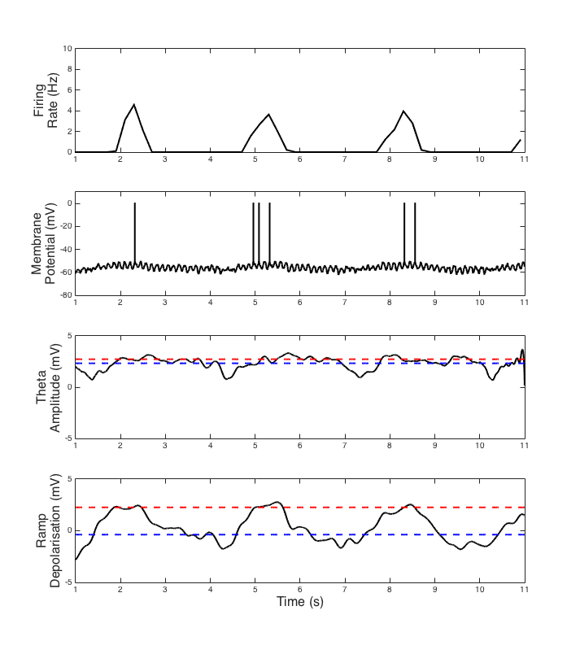

This is the readme for the simulation code associated with the paper: Bush D, Burgess N (2014) A hybrid oscillatory interference/continuous attractor network model of grid cell firing. J Neurosci 34:5065-79 This Matlab code was contributed by Dr Daniel Bush. Usage: Download and extract this archive and cd to the extracted folder. Type HybridModel on the Matlab command line. After a minute or two the graph below should appear (cf. Fig 3f in Bush & Burgess, 2014).  To run simulations with 2D tracking data, or with a different grid scale, simply edit the options on the first lines of the HybridModel Matlab script. Changing the top line in the code of HybridModel.m to 2D, e.g. Environment = '2D'; % Environment type (1D or 2D) and running, generates after 20 minutes or so (cf. Fig 3e in Bush & Burgess, 2014) Comments, criticisms and questions should be directed to drdanielbush at gmail.com